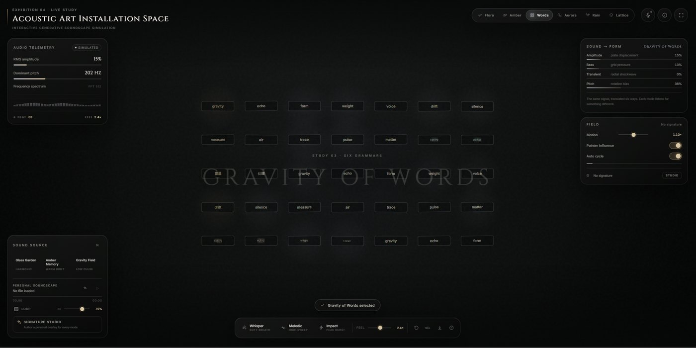
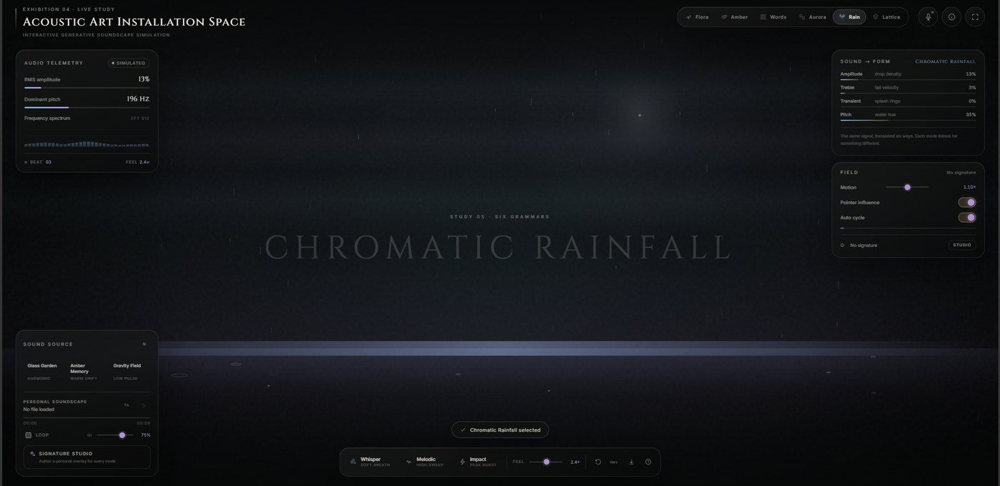
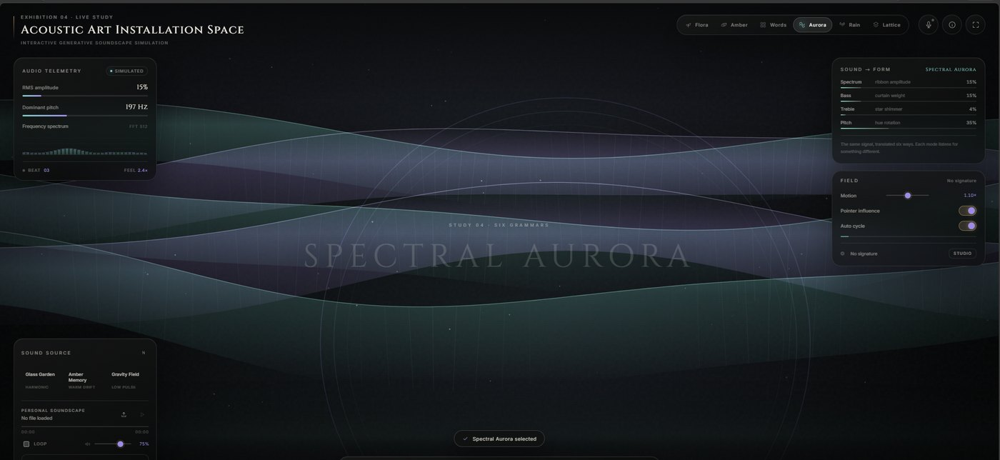
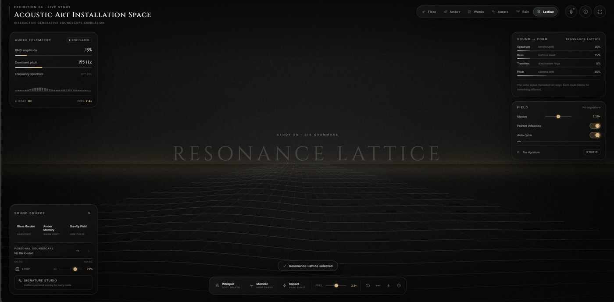

Work 03
Digital Media Technology — 2026
Sound and Vibration
A generative soundscape where the audio is translated into form: amplitude grows the branches, bass sets their radius, and a transient sends a ripple through the field. Six modes read the same signal as different visual languages, so the same sound never looks the same twice.
Modes — 04 of 06



